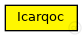
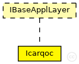

This documentation is released under the Creative Commons license
This documentation is released under the Creative Commons licenseAuthor: Margarete Sa
See also: Icarqoc
See also: Nic80211p
See also: Mac1609_4
See also: PhyLayer80211p
The following diagram shows usage relationships between types. Unresolved types are missing from the diagram. Click here to see the full picture.
The following diagram shows inheritance relationships for this type. Unresolved types are missing from the diagram. Click here to see the full picture.
| Name | Type | Default value | Description |
|---|---|---|---|
| appName | string | "Icarqoc!" | |
| headerLength | int | 88bit |
header length of the application |
| integratedScenario | bool | false | |
| radiusSet | double | 250 |
valor baseado no artigo XXXXXXXXX meters |
| maxSpeedRoute0 | double | 24.4 |
em m/s 88 km/h máximo da via + 10% tolerado em lei municipal |
| maxSpeedRoute1 | double | 24.4 |
em m/s 88 km/h máximo da via + 10% tolerado em lei municipal |
| Name | Value | Description |
|---|---|---|
| class | veins::Icarqoc | |
| display | p=60,50 |
| Name | Direction | Size | Description |
|---|---|---|---|
| lowerLayerIn | input |
from mac layer |
|
| lowerLayerOut | output |
to mac layer |
|
| lowerControlIn | input | ||
| lowerControlOut | output |
// // @author Margarete Sa // // @see Icarqoc // @see Nic80211p // @see Mac1609_4 // @see PhyLayer80211p // simple Icarqoc like IBaseApplLayer { parameters: @class(veins::Icarqoc); @display("p=60,50"); string appName = default("Icarqoc!"); int headerLength @unit(bit) = default(88bit); //header length of the application bool integratedScenario = default(false); double radiusSet = default(250); // valor baseado no artigo XXXXXXXXX meters double maxSpeedRoute0 = default(24.4);// em m/s 88 km/h máximo da via + 10% tolerado em lei municipal double maxSpeedRoute1 = default(24.4);// em m/s 88 km/h máximo da via + 10% tolerado em lei municipal gates: input lowerLayerIn; // from mac layer output lowerLayerOut; // to mac layer input lowerControlIn; output lowerControlOut; }
This documentation is released under the Creative Commons license